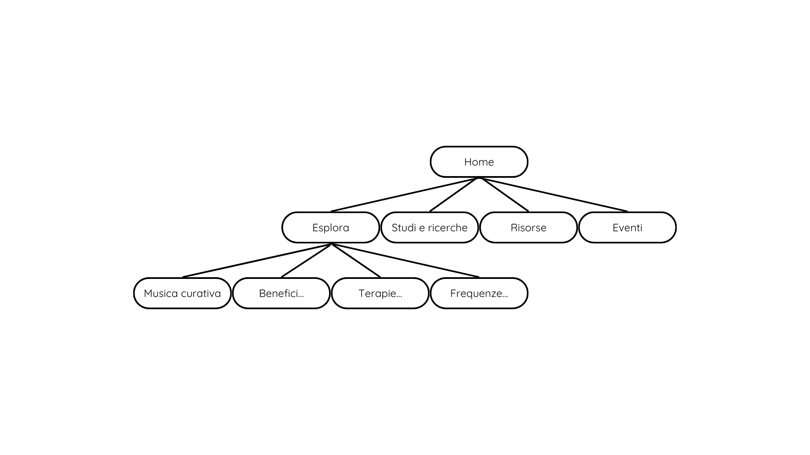
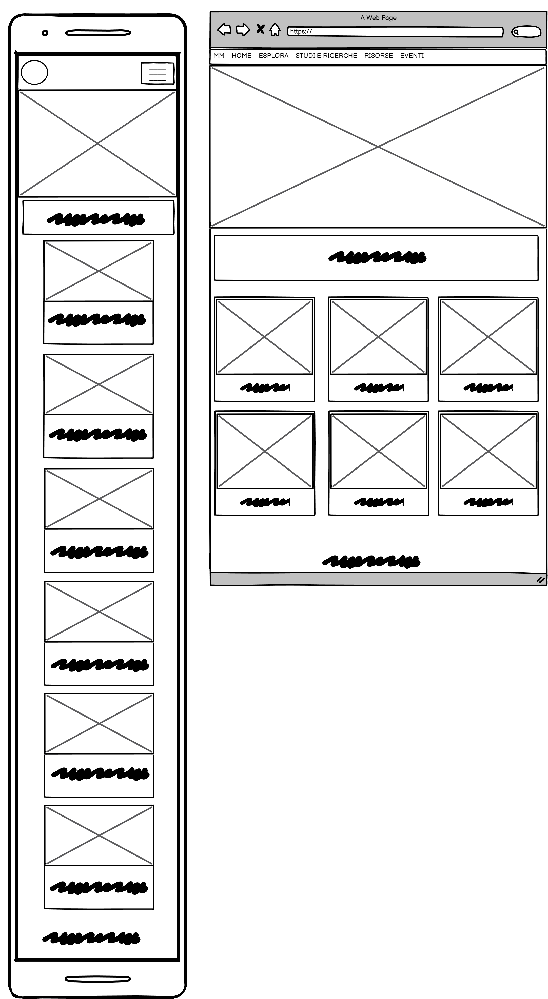
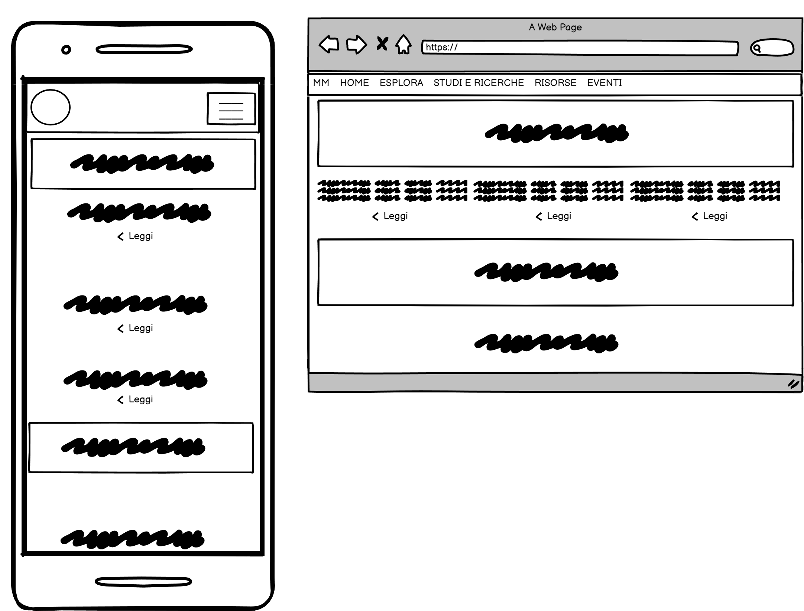
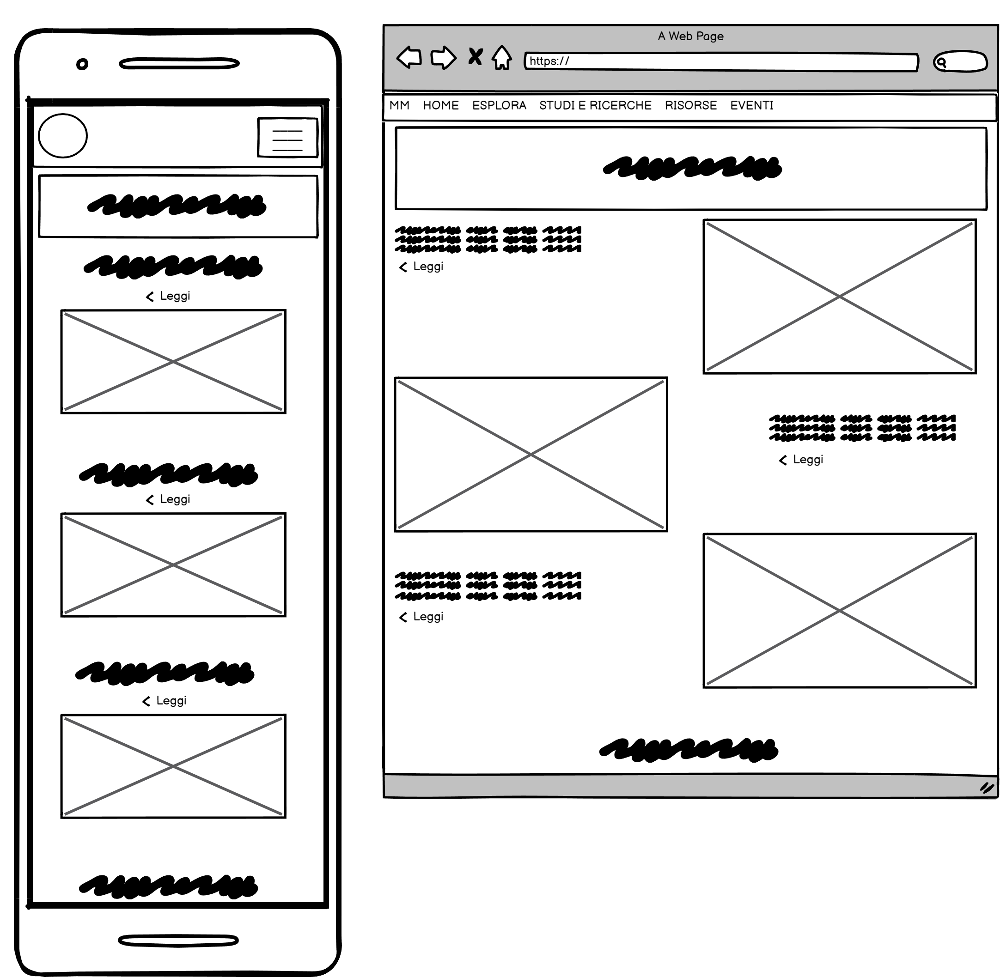
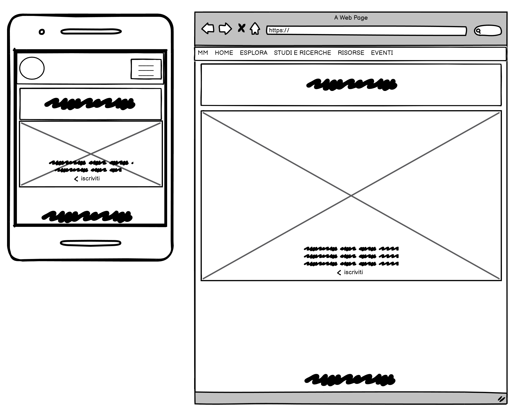

Documentazione
Abstract
Ho creato questo sito web con l’obbiettivo di aumentare la consapevolezza sul potenziale terapeutico della musica e di educare il pubblico su come la musica può influenzare positivamente la salute mentale e fisica. Ho scelto di lavorare su un template responsive perché il target è vario (dai più piccoli ai più grandi) che desiderano leggerne al riguardo da qualsiasi dispositivo.
Project Management Plan
1. Benchmarking
1.1 Obiettivi
L’obbiettivo principale di questo sito è quello di condividere informazioni dettagliate sui benefici specifici della musica, suggerimenti pratici e risorse che possono aiutare le persone a sfruttare appieno il potere terapeutico della musica.
1.2 Target utente
Il target utente è vario. Il sito si rivolge a tutti coloro che sono interessati a sapere di più in merito alla musica curativa.
1.3 Competitors
Esplorare il panorama dei competitor nel settore della musica medicinale rivela una realtà unica e distintiva. Contrariamente a molte nicchie online, si nota una notevole assenza di siti web dedicati in modo specifico a questa forma di espressione artistica e terapeutica. Il mio sito si pone così come pioniere in questo campo, offrendo un'esperienza unica e ineguagliabile nel mondo della musica medicinale.Analizzando la presenza sui social media, emerge una situazione altrettanto interessante. Pochi profili dedicati a questa tematica sono presenti sulle principali piattaforme social, e quelli esistenti spesso mostrano un contenuto limitato e un numero di follower ridotto (nome utente: Merkabah_musicamedicina, con un numero di post pari a 28 e un numero di follower pari a 199). La mia presenza online mira a colmare questa lacuna, offrendo non solo un sito web ricco di risorse sulla musica medicinale, ma anche una presenza sociale dinamica e coinvolgente.In un contesto in cui la musica medicinale sta guadagnando sempre più riconoscimento per i suoi benefici terapeutici, il mio sito si distingue come un'entità unica e autorevole, offrendo agli utenti un'opportunità senza pari di esplorare, apprendere e connettersi con questa forma unica di arte e cura del benessere.
2. Struttura e Layout
2.1 Architettura del sito

2.2 Wireframe
Wireframe Homepage

Wireframe pagina Studi e ricerche

Wireframe pagina Risorse

Wireframe pagina Eventi

2.3 Look and Feel
Creando il sito web per un luogo dedicato alla musica medicinale, ho effettuato scelte grafiche mirate a trasmettere un'atmosfera rilassante e curativa. Per catturare l'attenzione degli utenti fin dalla prima visita, ho inserito un ampio carosello di immagini che occupa la parte superiore della pagina: una rappresentazione visiva armoniosa di strumenti musicali.La scelta dei colori è stata ispirata alle tonalità rilassanti - #B5A391. Il testo è stato mantenuto in una tonalità neutra di marrone - #654321 - per garantire la leggibilità senza disturbare l'armonia generale.Il font scelto per l'intero sito è "Quicksand - Sans Serif", noto per la sua eleganza, contribuendo a creare un'estetica pulita e moderna. Queste scelte grafiche mirano a trasmettere un'esperienza online che sia non solo informativa sulla musica medicinale, ma anche rilassante e curativa per gli utenti che lo visitano.
3. Linguaggi e strumenti
3.1 Linguaggi web utilizzati
HTML, CSS, JavaScript
3.2 Strumenti tecnologici utilizzati
SublimeText2 come text editor; FontAwesome per le icone; Pexel per le immagini; Html Colors per le palette di colori; Googlefont per i font; Template di Getbootstrap; Balsamiq e Canva per la realizzazione del diagramma ad albero e del wireframe; Github per la pubblicazione; Google Analytics per il controllo delle visualizzazioni.
Communication Strategy
1. Background
I concorrenti che ho analizzato nel settore della musica medicinale non dispongono di un sito web dedicato, pertanto il mio rappresenterebbe il primo portale online per un lounge musicale "terapeutico e senza fronzoli". Nonostante la presenza di qualche profilo sulle piattaforme di social media sia essenziale (i concorrenti in questo campo sono attivi e vantano un consistente numero di follower), ritengo che sia altrettanto cruciale per ogni lounge dedicato alla musica medicinale avere un sito web centralizzato che raccolga tutte le informazioni cruciali. Questo consentirà agli utenti di trovare facilmente tutte le informazioni di loro interesse in un unico luogo, evitando di doverle cercare tra vari social e pagine web. Questa caratteristica rappresenta la principale forza del nostro sito e ciò che lo rende altamente efficace.
2. Obiettivi comunicativi
Con la creazione di questo sito web, ho voluto arricchire l'esperienza della Musica Medicinale offrendo qualcosa di unico rispetto agli altri in ambito musicale. Gli obiettivi comunicativi si concentrano principalmente sull'aspetto informativo: il sito spiega agli utenti i benefici e le caratteristiche distintive della Musica Medicinale. La struttura del sito è progettata per offrire una navigazione intuitiva, consentendo agli utenti di accedere facilmente a contenuti chiari, autentici e accattivanti. Ho fatto queste scelte con l'obiettivo di raggiungere un vasto pubblico, in particolare coloro che sono interessati agli effetti positivi della musica sulla salute.Il sito si propone come principale scopo la promozione della Musica Medicinale e l'espansione della sua audience attraverso informazioni dettagliate e comprensibili. Allo stesso tempo, mira a creare una connessione duratura con gli utenti già familiari con questa forma di terapia musicale, mentre si impegna a raggiungere anche coloro che non ne sono ancora consapevoli.
3. Target audience e messaggio
Il sito si rivolge a un pubblico specifico interessato alla musica medicinale: appassionati di terapie sonore, professionisti della salute mentale, e individui in cerca di un approccio alternativo alla gestione dello stress e al miglioramento del benessere psicofisico. L'obiettivo primario è raggiungere coloro che sono aperti all'uso terapeutico della musica e desiderano esplorare i benefici della musica medicinale.La geolocalizzazione è rilevante in questo contesto, poiché il pubblico potenziale è principalmente italiano.La promozione del sito avviene principalmente attraverso piattaforme specializzate in musica, forum dedicati alla salute mentale, e newsletter di settore. I social media come Instagram e Facebook possono essere utilizzati per raggiungere un pubblico più ampio, includendo sia professionisti che appassionati.Il messaggio fondamentale del sito è trasmettere l'idea che la musica può essere una potente forma di medicina per la mente e il corpo. Il sito fornisce informazioni dettagliate su diverse forme di musica medicinale, artisti e eventi correlati. L'organizzazione intuitiva del sito facilita la navigazione e offre una piacevole esperienza utente, incoraggiando gli utenti a esplorare le varie opzioni disponibili. Si spera che il pubblico venga ispirato a integrare la musica medicinale nella propria vita quotidiana e a condividere l'esperienza con la propria rete di contatti.
4. Promozione
Intendo promuovere il sito prevalentemente online, tramite social come Instagram e Facebook.
5. Valutazione dei risultati
Attraverso l'analisi tramite l'utilizzo di strumenti come Google Analytics, ho verificato con soddisfazione che l'obiettivo di raggiungere 20 visite da parte di utenti appassionati di musica medicinale è stato superato. Attualmente, il nostro sito ha attratto l'attenzione di oltre 40 utenti unici nel giro di 24h, accomapgnata anche da una interazione anche sui social media. La mia missione è far sì che la musica medicinale diventi una fonte di ispirazione e benessere per tutti, e non vedo l'ora di accogliere un pubblico sempre più ampio nel mio universo sonoro terapeutico.